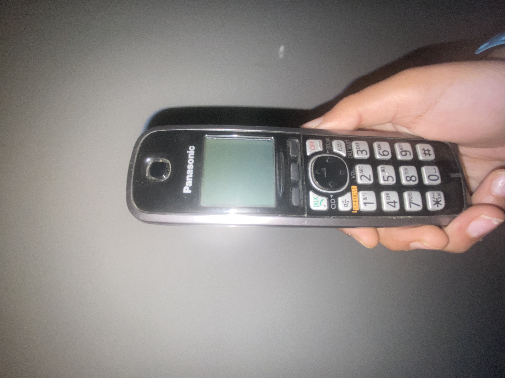
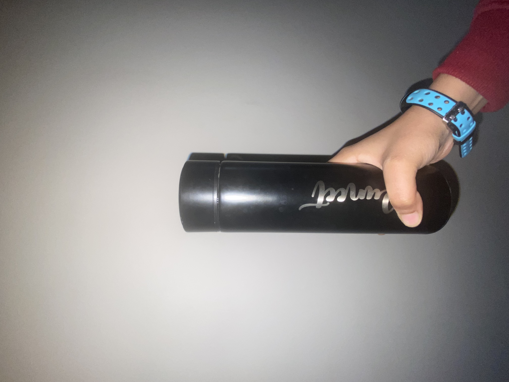
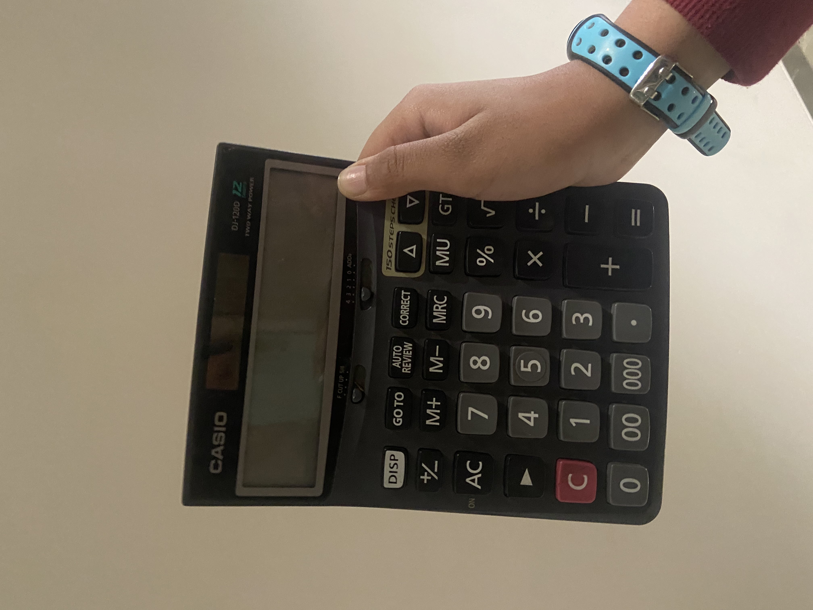
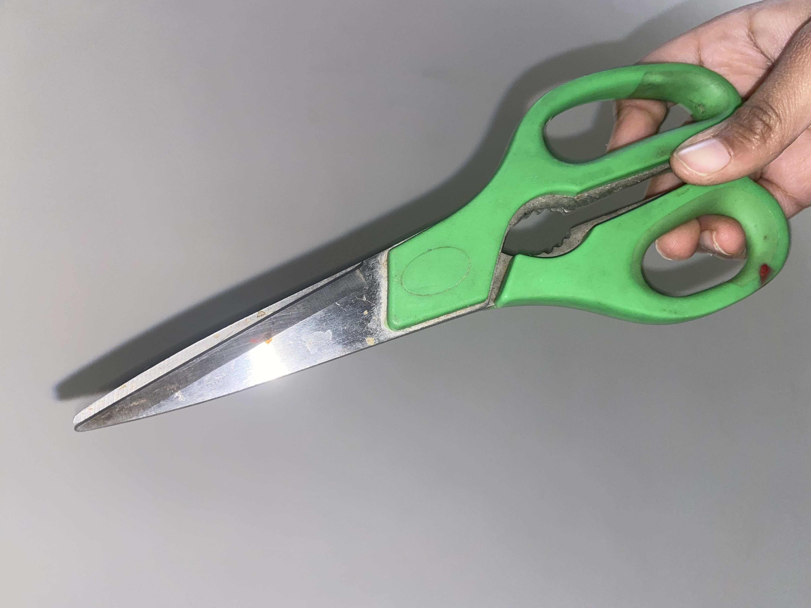

- Test Image - 
Output on GOOGLE LENS - Panasonic KX-TGA510B - Cordless Telephone
Output on Mobilenet Model - Cellphone
Result -
Google Lens is more acurate.
- Test Image - 
Output on GOOGLE LENS - NO Matches (only visual Matches )
Output on Mobilenet Model - Microphome , mike
Result -
Both dont have good result but google lens had visual matches correct so lets take Google lens.
- Test Image - 
Output on GOOGLE LENS - Casio DJ-120D - Basic calculator
Output on Mobilenet Model - Hand Held Computer
Result -
Google lens is more accurate.
- Test Image -

Output on GOOGLE LENS - Detangling Hairbrush , Tangle Teezer - Hairbrush
Output on Mobilenet Model - Racket
Result -
Google Lens is more accurate.
- Test Image - 
Output on GOOGLE LENS - NO Matches (only visual Matches )
Output on Mobilenet Model - Vaccum Cleaner
Result -
Both dont have good result but google lens had visual matches correct so lets take Google lens.
According to my case study I have tested 5 objects , out of 5 times 3 times google lens is more accurate (though google lens could not indentify scicors and bottle) and Mobile.Net was less accurate.
Now the conclusion turns out that Google lens is more accurate than Mobile.Net .